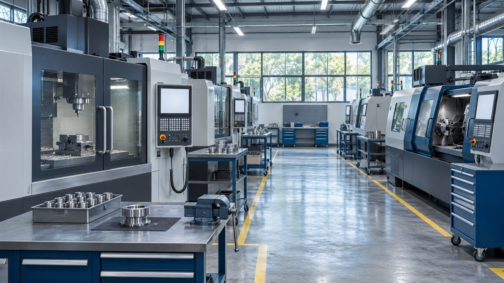
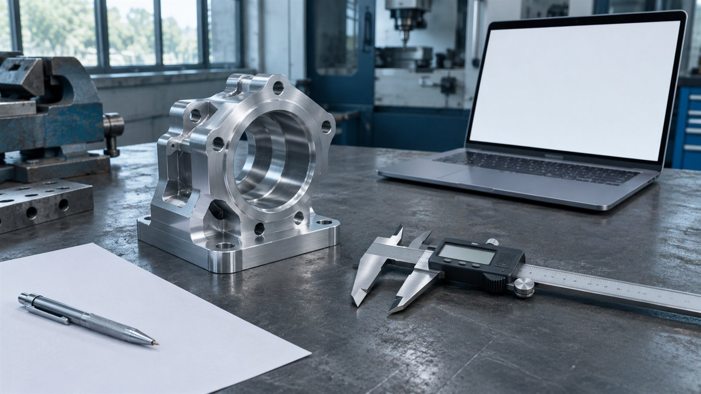

Пример · данные условные
Структура инвестиций / пример
| Статья | млн ₽ | Основание |
|---|---|---|
| Оборудование | 32 | Предложения |
| Подготовка площадки | 8 | Расчёт работ |
| Оборотные средства | 10 | Финмодель |
Модернизация производства / кейс-концепт
Собираем экономику проекта и доказательную базу в связный бизнес-план.
Посмотреть результат
Пример · данные условные
| Статья | млн ₽ | Основание |
|---|---|---|
| Оборудование | 32 | Предложения |
| Подготовка площадки | 8 | Расчёт работ |
| Оборотные средства | 10 | Финмодель |
Условное предприятие планирует приобрести оборудование и подготовить проект для обращения за финансированием. Коммерческие предложения, план выпуска и финансовые расчёты существуют отдельно. Нужно привести их к одной версии и показать, какие сведения ещё предстоит подтвердить.
Показываем последовательность работы на условном проекте.
Зафиксировали продукт, оборудование, бюджет и источники исходных данных.
Связали план выпуска, продажи, инвестиции и потребность в оборотных средствах.
Описали рынок, производственный процесс, этапы и риски с указанием источников.
Проверили согласованность цифр и составили список документов для дальнейшей подачи.

В этом сценарии заказчик получает:
Иллюстрация структуры проекта, не условия программы ФРП. Актуальный состав требований проверяется при подготовке; одобрение финансирования не гарантируется.
Пример · данные условные
| Статья | млн ₽ | Основание |
|---|---|---|
| Оборудование | 32 | Предложения |
| Подготовка площадки | 8 | Расчёт работ |
| Оборотные средства | 10 | Финмодель |
280 000 ₽
Ориентир из прайса. Итоговый объём и стоимость согласуем по исходным данным.
По согласованию после получения данных
Срок считаем после получения согласованного комплекта данных. Ожидание внешних ответов обсуждаем отдельно.
Подготовьте исходные документы и желаемый результат.
Форма на сайте студии работает в демонстрационном режиме.